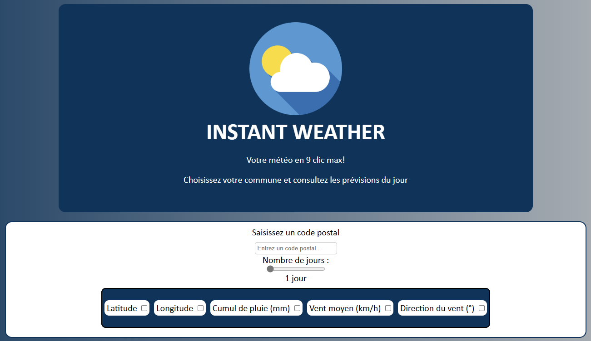
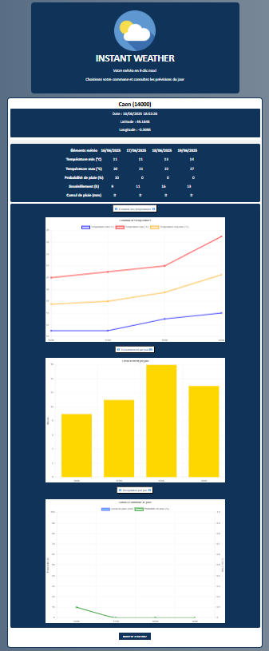

Julien RIBARDIERE
- Age: 28 ans
- Localisation: CAEN, Calvados
- Formation en cours: BUT Réseaux et Télécommunications
- Mail: julien.ribardiere14@gmail.com

Le but de ce projet est de mettre à jour un site web existant dédié à l'exploitation d'une API météorologique, en utilisant les langages HTML, CSS et JavaScript.
Le site doit permettre à l'utilisateur de rechercher des informations météorologiques pour une ville donnée, en affichant certaines données de l'API, dont certaines peuvent être choisies par l'utilisateur, de manière claire et accessible.
Voici le cahier des charges du projet :
S'intégrer dans un service informatique
• Utiliser un système informatique et ses outils
• Lire, exécuter, corriger et modifier un programme
• Traduire un algorithme, dans un langage et pour un environnement donné
• Connaître l'architecture et les technologies d'un site web
• Choisir les mécanismes de gestion de données adaptés au développement de l'outil et argumenter ses choix
• S'intégrer dans un environnement propice au développement et au travail collaboratif
Dans le cadre de ce projet, j'ai donc récupéré le code du site web existant, puis j'ai modifié le code HTML, le code CSS et les scripts JavaScript.
En complément, j'ai ajouté des fonctionnalités réparties dans des scripts JavaScript distincts permettant la création d'un tableau pour compiler les données météo demandées ainsi que la génération de graphiques.
Voici actuellement les résultats obtenus concernant le projet :
 Lien du site : INSTANT WEATHER
Ce projet m'a permis de mettre en pratique mes connaissances en JavaScript acquises durant le 2e semestre de ma formation. J'ai pu apprendre à manipuler les API et à utiliser les données récupérées pour les afficher de manière claire et accessible.
Néanmoins, j'ai rencontré des difficultés à adapter l'affichage du tableau pour les petits écrans malgré mes multiples tentatives de modification du code CSS, masquant ainsi la première colonne dans certaines conditions.
Je devrai donc approfondir mes connaissances en CSS pour mieux comprendre comment rendre un site web responsive et adapter l'affichage du tableau aux petits écrans.